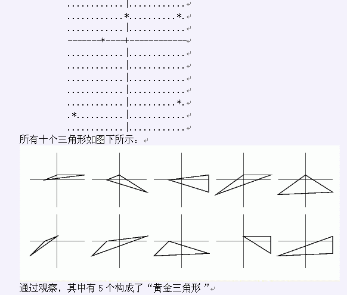

第一行:一个整数: N 第2到第N+1行: 每行两个整数X_i，Y_i，表示每只牛的坐标
在一只大灰狼偷偷潜入Farmer Don的牛群被群牛发现后，贝西现在不得不履行着她站岗的职责。从她的守卫塔向下瞭望简直就是一件烦透了的事情。她决定做一些开发智力的小练习，防止她睡着了。想象牧场是一个X，Y平面的网格。她将N只奶牛标记为1…N (1 <= N <= 100,000)，每只奶牛的坐标为X_i,Y_i (-100,000 <= X_i <= 100,000;-100,000 <= Y_i <= 100,000; 1 <= i <=N)。然后她脑海里想象着所有可能由奶牛构成的三角形。如果一个三角形完全包含了原点(0,0)，那么她称这个三角形为“黄金三角形”。原点不会落在任何一对奶牛的连线上。另外，不会有奶牛在原点。给出奶牛的坐标，计算出有多少个“黄金三角形”。顺便解释一下样例，考虑五只牛，坐标分别为(-5,0), (0,2), (11,2), (-11,-6), (11,-5)。下图是由贝西视角所绘出的图示。

第一行:一个整数: N 第2到第N+1行: 每行两个整数X_i，Y_i，表示每只牛的坐标
* 第一行: 一行包括一个整数，表示“黄金三角形的数量”
5
-5 0
0 2
11 2
-11 -6
11 -5
5